Mecz bez przerw, same wymiany
Nagraj cały mecz, a Rallino znajdzie wymiany i wytnie przerwy – na telefonie, bez wysyłania. Siatkówka, padel, tenis i badminton. Klip pionowy w minutę.
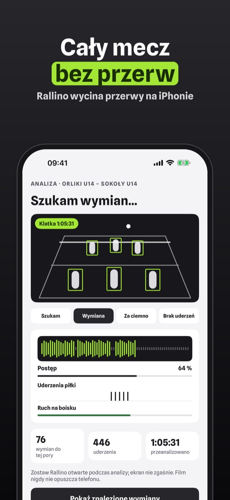
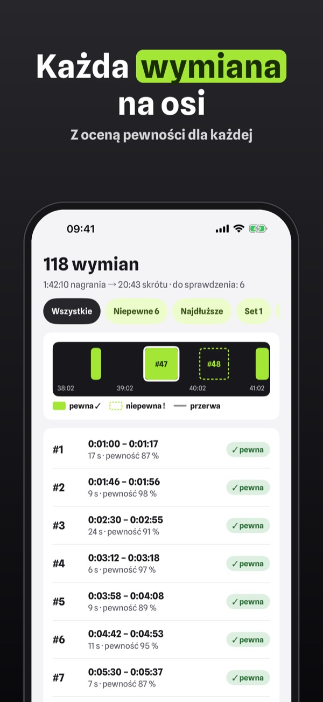
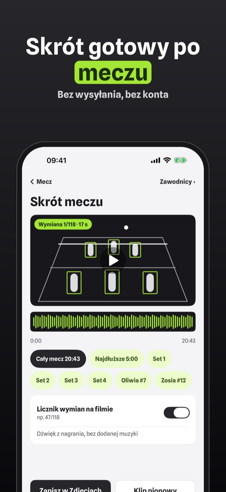
Rallino skraca nagranie meczu do samych wymian. Słucha uderzeń piłki i śledzi ruch na boisku, a potem składa skrót – wszystko na Twoim iPhonie.
Bez zakupu: skrót do 10 minut na mecz, lista wymian z poprawkami i jeden klip pionowy na mecz. Rallino Plus to jednorazowy zakup: pełne skróty, klipy zawodników, klipy pionowe bez limitu, statystyki i udostępnianie drużynie. Bez subskrypcji.
Rallino proponuje wymiany na podstawie dźwięku i obrazu; sprawdź je przed udostępnieniem. Aplikacja nie jest powiązana z żadnym związkiem sportowym ani ligą. Filmy zostają na Twoim urządzeniu.
Terms of Use (EULA): https://www.apple.com/legal/internet-services/itunes/dev/stdeula/
Privacy: https://baytechbv.github.io/privacy/rallino-eu/
Solo gli scambi, zero pause
Registra tutta la partita: Rallino trova gli scambi e taglia le pause sul telefono, senza caricare nulla. Pallavolo, padel, tennis, badminton. Clip verticali.
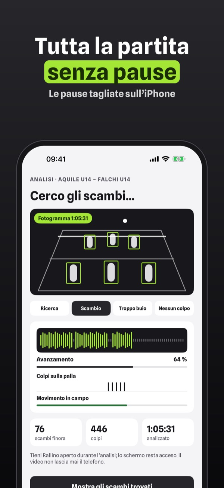
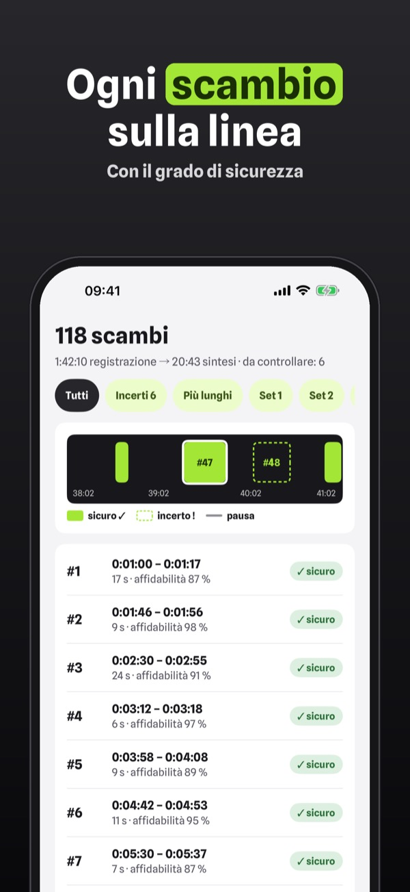
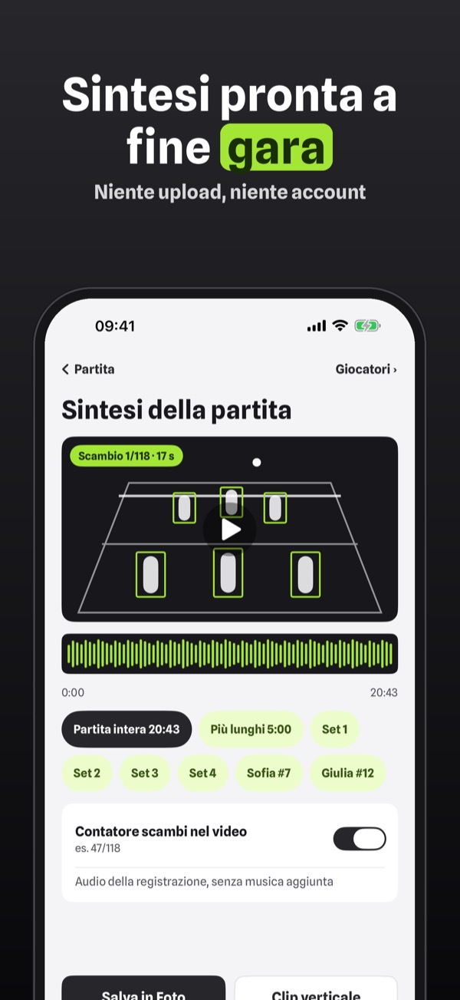
Rallino riduce la registrazione di una partita ai soli scambi. Ascolta i colpi sulla palla e segue il movimento in campo, poi monta la sintesi – tutto sul tuo iPhone.
Senza acquisto: sintesi fino a 10 minuti per partita, elenco degli scambi con correzioni e una clip verticale per partita. Rallino Plus è un acquisto unico: sintesi complete, clip dei giocatori, clip verticali illimitate, statistiche e condivisione con la squadra. Nessun abbonamento.
Rallino propone gli scambi in base a suono e immagine; controllali prima di condividerli. L’app non è collegata a federazioni o leghe. I video restano sul tuo dispositivo.
Terms of Use (EULA): https://www.apple.com/legal/internet-services/itunes/dev/stdeula/
Privacy: https://baytechbv.github.io/privacy/rallino-eu/
Wedstrijd zonder dode tijd
Neem de hele wedstrijd op: Rallino vindt de rally’s en knipt de pauzes eruit op je telefoon, zonder uploaden. Volleybal, padel, tennis en badminton.
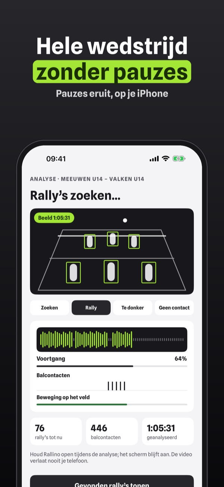
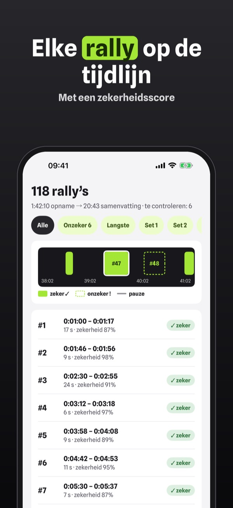
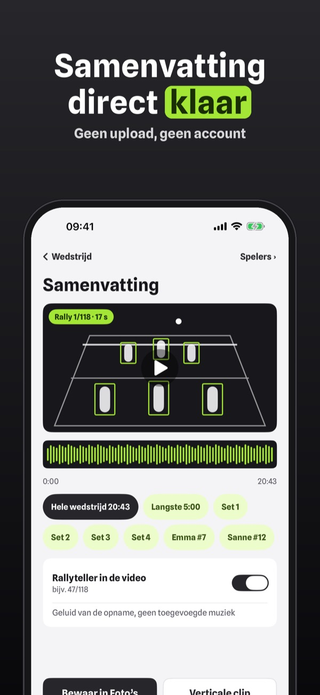
Rallino brengt een wedstrijdopname terug tot alleen de rally’s. De app luistert naar balcontact en volgt beweging op het veld, en maakt dan de samenvatting – alles op je iPhone.
Zonder aankoop: samenvatting tot 10 minuten per wedstrijd, rally-lijst met correcties en één verticale clip per wedstrijd. Rallino Plus is een eenmalige aankoop: volledige samenvattingen, spelersclips, onbeperkt verticale clips, statistiek en delen met je team. Geen abonnement.
Rallino stelt rally’s voor op basis van geluid en beeld; controleer ze voordat je deelt. De app is niet verbonden aan een bond of competitie. Video’s blijven op je apparaat.
Terms of Use (EULA): https://www.apple.com/legal/internet-services/itunes/dev/stdeula/
Privacy: https://baytechbv.github.io/privacy/rallino-eu/
Solo los puntos, sin pausas
Graba el partido entero: Rallino encuentra los puntos y corta las pausas en el móvil, sin subir nada. Vóley, pádel, tenis y bádminton. Clips verticales.
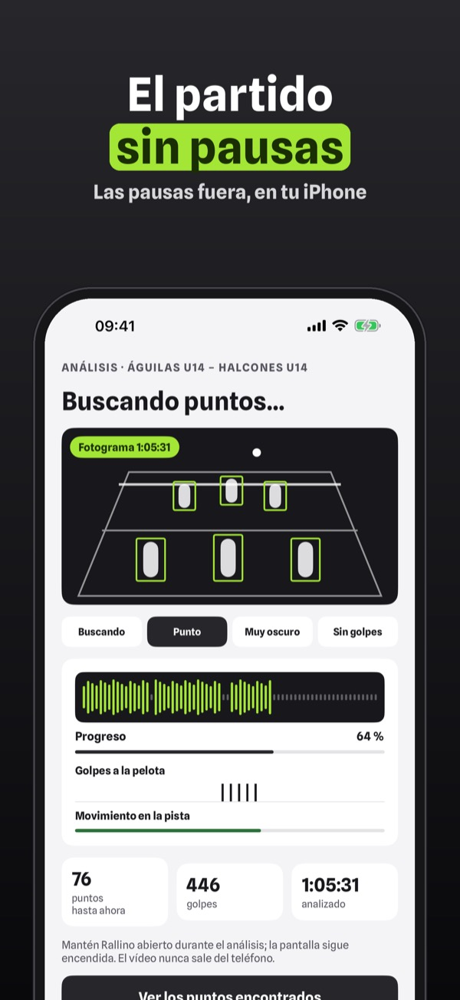
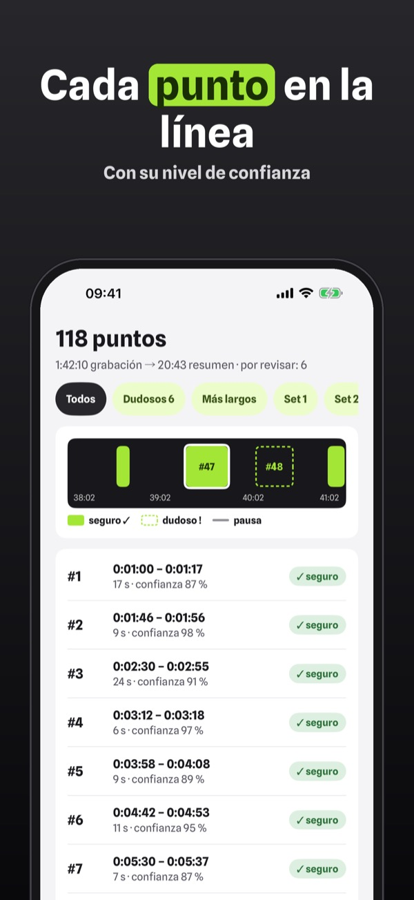
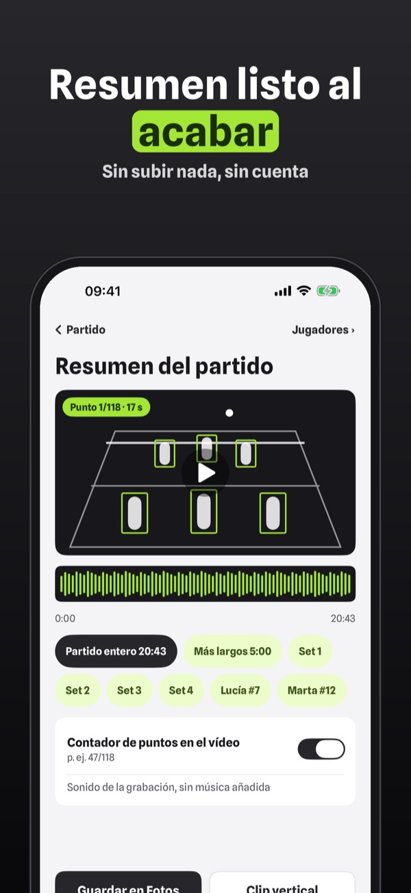
Rallino reduce la grabación de un partido a solo los puntos. Escucha los golpes a la pelota y sigue el movimiento en la pista, y luego monta el resumen – todo en tu iPhone.
Sin compra: resumen de hasta 10 minutos por partido, lista de puntos con correcciones y un clip vertical por partido. Rallino Plus es una compra única: resúmenes completos, clips por jugador, clips verticales sin límite, estadísticas y equipo. Sin suscripción.
Rallino propone los puntos a partir del sonido y la imagen; revísalos antes de compartir. La app no está vinculada a ninguna federación ni liga. Los vídeos se quedan en tu dispositivo.
Terms of Use (EULA): https://www.apple.com/legal/internet-services/itunes/dev/stdeula/
Privacy: https://baytechbv.github.io/privacy/rallino-eu/
Que les échanges, sans pauses
Filmez tout le match : Rallino trouve les échanges et coupe les pauses sur le téléphone, sans rien envoyer. Volley, padel, tennis et badminton. Clips verticaux.
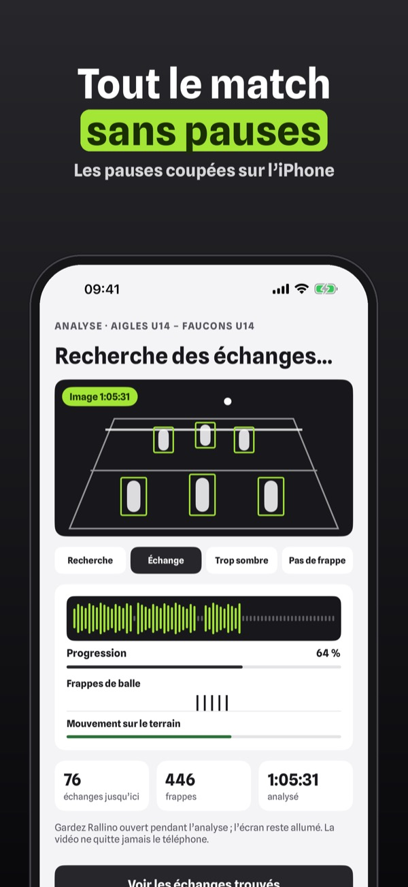
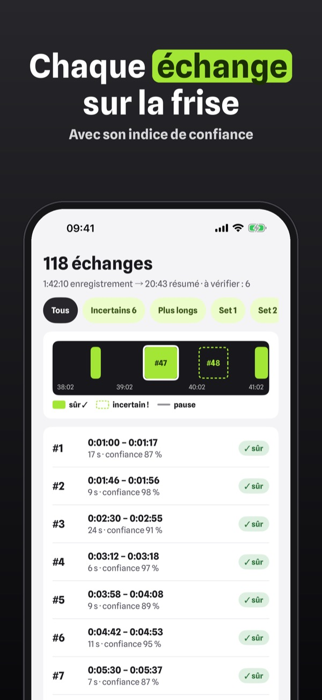
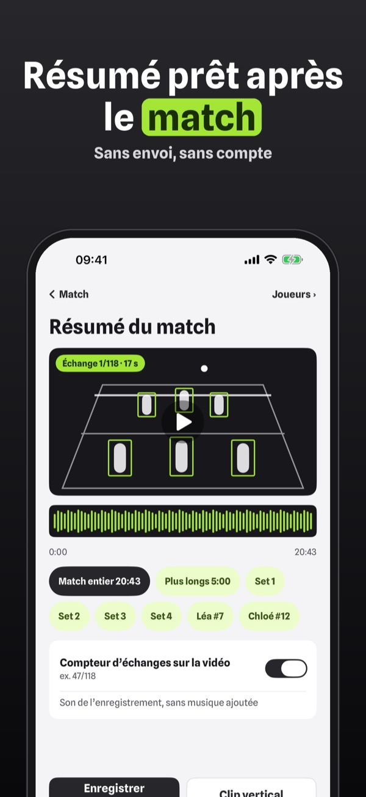
Rallino réduit l’enregistrement d’un match aux seuls échanges. Il écoute les frappes de balle et suit le mouvement sur le terrain, puis monte le résumé – tout sur votre iPhone.
Sans achat : résumé jusqu’à 10 minutes par match, liste des échanges avec corrections et un clip vertical par match. Rallino Plus est un achat unique : résumés complets, clips par joueur, clips verticaux illimités, statistiques et partage avec l’équipe. Sans abonnement.
Rallino propose les échanges à partir du son et de l’image ; vérifiez-les avant de partager. L’app n’est liée à aucune fédération ni ligue. Les vidéos restent sur votre appareil.
Terms of Use (EULA): https://www.apple.com/legal/internet-services/itunes/dev/stdeula/
Privacy: https://baytechbv.github.io/privacy/rallino-eu/
Nur Ballwechsel, kein Leerlauf
Nimm das ganze Spiel auf: Rallino findet die Ballwechsel und schneidet Pausen auf dem Handy heraus, ohne Upload. Volleyball, Padel, Tennis und Badminton.
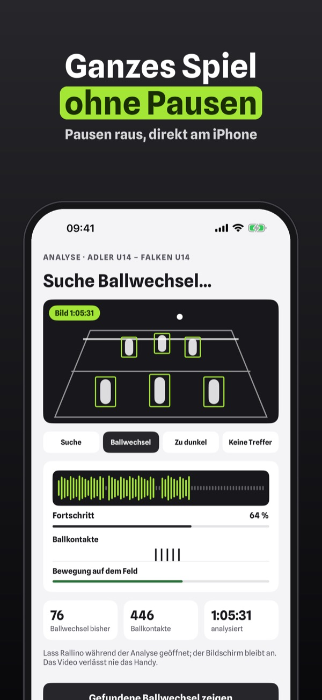
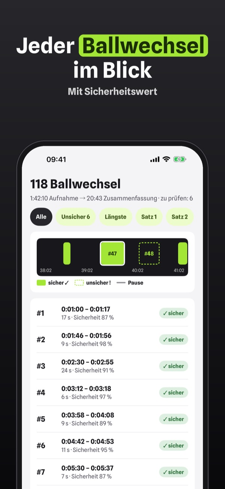
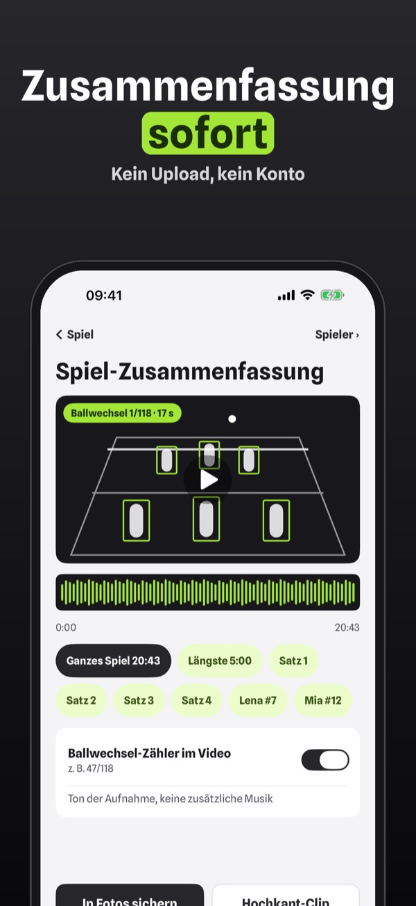
Rallino kürzt die Aufnahme eines Spiels auf die Ballwechsel. Die App hört auf Ballkontakte und folgt der Bewegung auf dem Feld, dann schneidet sie die Zusammenfassung – alles auf deinem iPhone.
Ohne Kauf: Zusammenfassung bis 10 Minuten pro Spiel, Ballwechsel-Liste mit Korrekturen und ein Hochkant-Clip pro Spiel. Rallino Plus ist ein Einmalkauf: volle Zusammenfassungen, Spieler-Clips, unbegrenzte Clips, Statistik und Teilen mit dem Team. Kein Abo.
Rallino schlägt Ballwechsel anhand von Ton und Bild vor; prüfe sie vor dem Teilen. Die App ist mit keinem Verband und keiner Liga verbunden. Videos bleiben auf deinem Gerät.
Terms of Use (EULA): https://www.apple.com/legal/internet-services/itunes/dev/stdeula/
Privacy: https://baytechbv.github.io/privacy/rallino-eu/